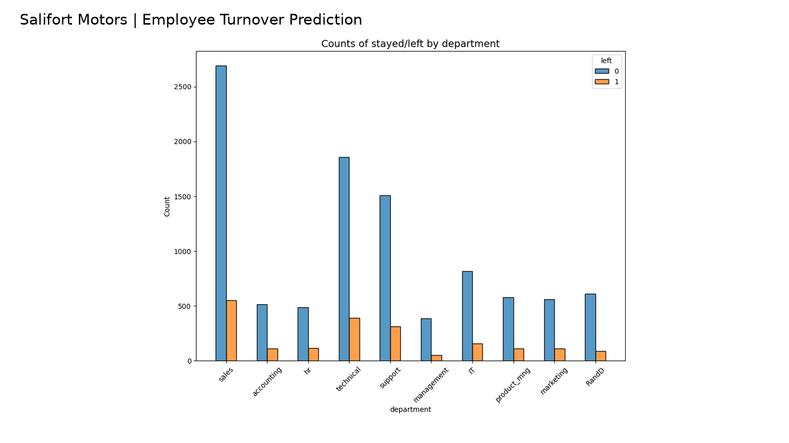
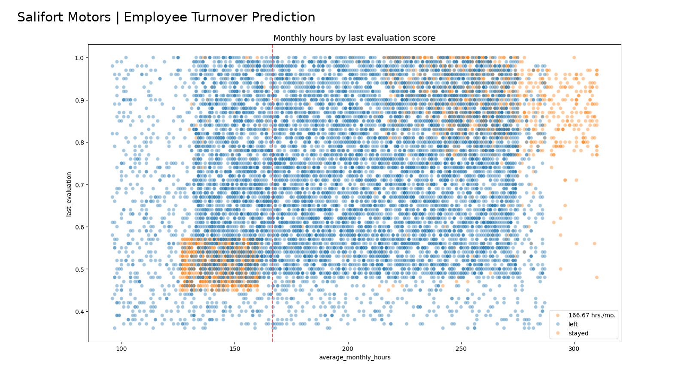
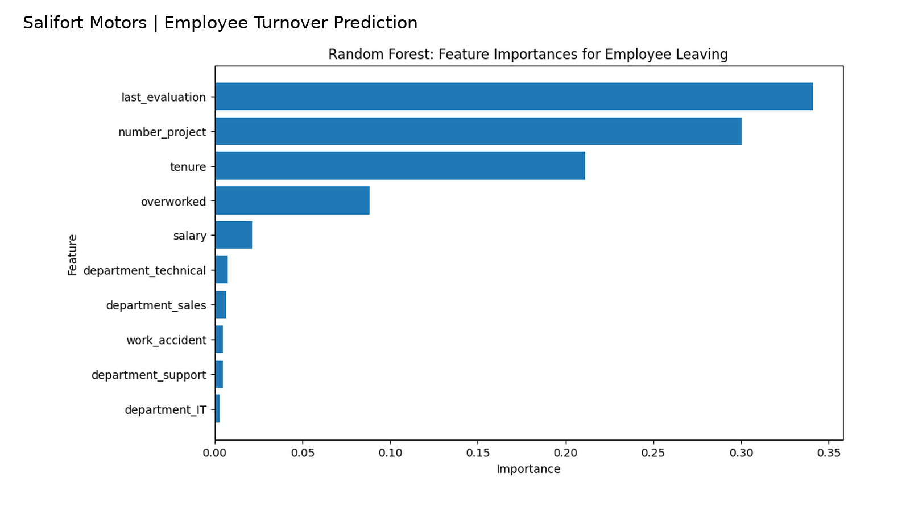

04 · Workforce prediction case study
Salifort Motors
Employee turnover prediction using feature engineering, model comparison, and Random Forest classification.
14,999employee records
3,008duplicates removed
96.5%test accuracy
96.1%test ROC AUC
01 · Analysis
Workload and evaluation carried strong predictive signal.
The analysis started with duplicate handling and exploratory checks, then moved to an engineered overworked indicator, a Logistic Regression baseline, Random Forest comparison, and holdout evaluation. The model is treated as decision support for human review, not an automated employment decision.
Key findingThe strongest signals were connected to workload and evaluation-related variables, giving HR a focused area to investigate instead of treating turnover as a black-box outcome.



02 · Model strategy
How the analysis turned into a usable model.
Model choice was tied to the question, the available data, and the evaluation metric. The result is presented with its trade-offs instead of treating one score as the whole story.
Logistic RegressionInterpretable baseline for comparison.
Random Forest96.5% accuracy · 92.2% precision · 86.4% recall · 89.2% F1 · 96.1% AUC
Feature engineeringOverworked indicator above 175 monthly hours.
03 · Final conclusionProblemHigh turnover can be expensive, but the raw data does not directly show where the risk is concentrated. Recommended actionReview workload, project allocation, and development patterns for employees showing the strongest risk signals. Important noteUse model output to support HR investigation. Do not use it as an automated employment decision.
What a client could actually use from this work.
The analysis gives a practical way to prioritize the HR questions behind turnover rather than relying on a single prediction score.
04 · Recommendations & notes
What I would do next.
Recommended next steps
- Review workload, project allocation, and development patterns for employees showing the strongest risk signals.
- Validate the recommendation with fresh data and a clear business success metric.
Important note
The dataset is educational. The model shows predictive relationships, not causal proof. A real deployment would need fresh data, fairness checks, and validation with actual HR outcomes.